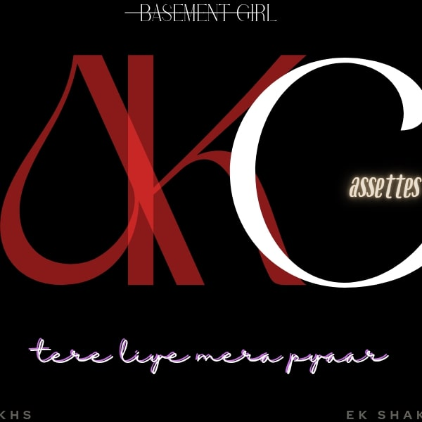

Tere liye mera pyaar
 TAP TO PLAY(fallback-link)
Sannataa tha dil ke raaste mein
ghanto tak baitha khayaalo mein khoya,
Kal tha saath gham ka saaya
har lamha bss udaas hi,
Phir ek din muskaan teri mili
jaise roshni..chaaya mera dil,
Har gham, har dard chhup gaya
sirf teri baatein yaad reh gayi,
Teri aankhon mein meri khushi
Tere hothon pe mili meri muskaan,
Har pal..har ghadii bss tu hi tu hai...
tere liye mera pyaar....
tere liye meri jaan..
tere liye mera pyaar....
Teri baatein jaise din mere dil mein
teri muskaan jaise chandni raaton ki,
Har cheez teri mere liye hai khaass
tere saath hi milti hai raahat,
Teri aankhon mein basi meri Khushi
tere hothon pe mili meri muskaan,
Har pal..har ghadii bss tu hi tu hai...
tere liye mera pyaar....
tere liye meri jaan..
tere liye mera pyaar....
Akelepan ki raatein katt gayi
teri yaadon mein khoya hu main,
Ab sirf tu..ab sirf tuu!!
tere liye mera dil..
tere liye meri jaan...
tere liye mera pyaar....